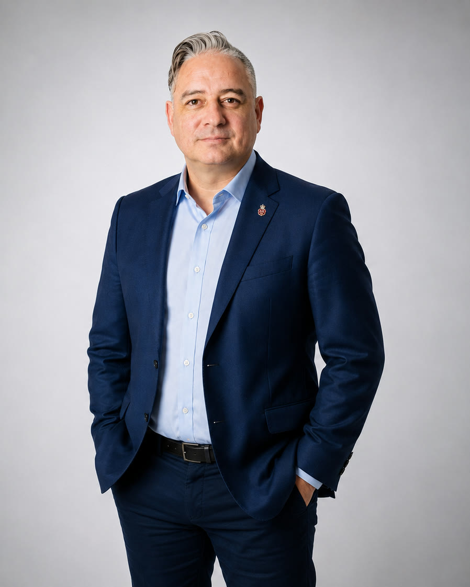
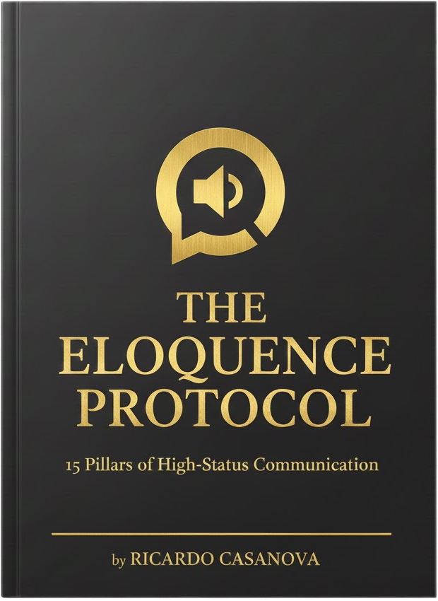
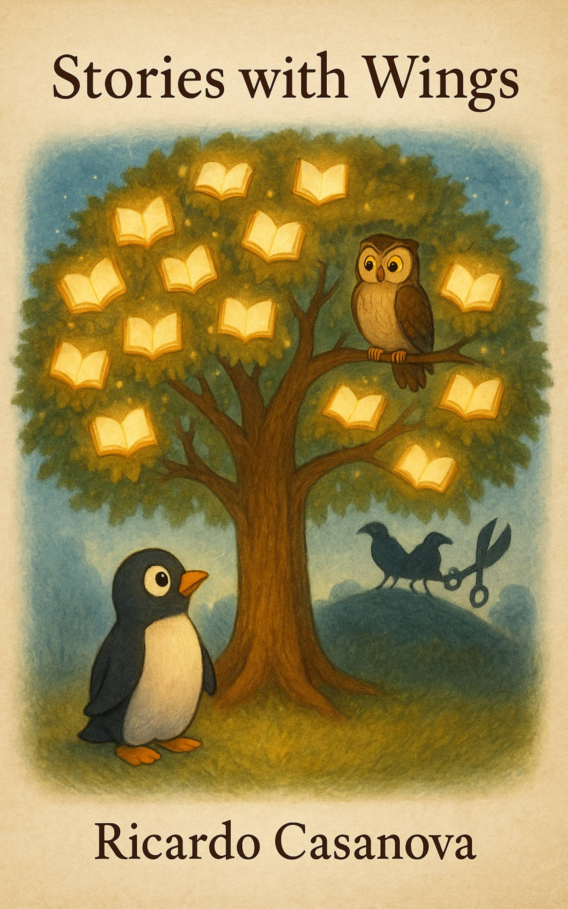
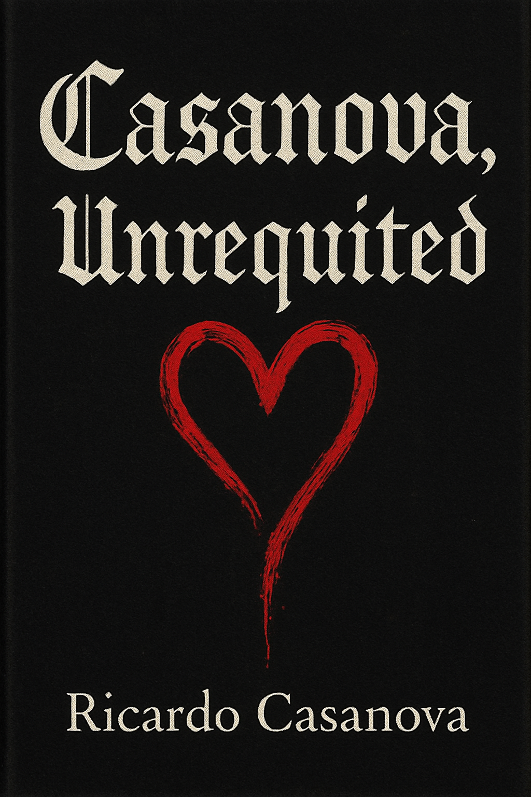

Queen Elizabeth II’s Platinum Jubilee Medal
Awarded the Queen Elizabeth II Platinum Jubilee Medal and the federal Platinum Jubilee commemorative pin, in recognition of community advancement in technology and public service.
About
Ricardo is a technology executive, entrepreneur, speaker and author with more than twenty years across mobile technology, telecommunications, emerging technology and AI. He builds companies and products where technology meets the way people communicate.

Background
Ricardo's career spans mobile technology, telecommunications, IoT and machine-to-machine systems, big data, machine learning and AI. He has worked with large enterprises and government-facing organizations, and has advised on commercial strategy, partnerships and executive communication for complex technology.
He is based between Bangkok and Edmonton, Canada, and works across the Edmonton, Bay Area and Bangkok corridor. Today he leads Toasty Media, which builds Toasty Studio and Toasty Peeps, and he develops a wider portfolio of companies and platforms that includes 8ALTA, Santati and Get Thai'd Down.
Recognition
Awarded the Queen Elizabeth II Platinum Jubilee Medal and the federal Platinum Jubilee commemorative pin, in recognition of community advancement in technology and public service.
Speaking & advisory
Clear positions, real operating experience and practical ideas for leaders working through AI, technology, trust and change.
High-signal conversations that connect technical change to commercial and human consequences.
Executive-level framing of where AI actually changes the business, with commercial and strategic interpretation across AI, mobile, IoT, agents and DePIN.
Sharper narratives for complex products and markets, and communication systems for leaders carrying difficult ideas into the room.
Books

A 15-pillar practical system for diction, delivery, presence, persuasion and speaking under pressure.

An illustrated allegory about challenged books, censorship and the freedom to read.

Poetry and prose about identity, desire, loss and reclaiming a famous surname as something personally lived.
Details to be announced.
Publications & writing
Portfolio
AI consulting, business transformation and implementation.
Visit 8alta.com →CRM, human dynamics and behavioral intelligence for organizations.
Visit santaticrm.com →A personalized platform helping people navigate travel, relocation and life in Thailand.
Visit Get Thai'd Down →An AI-assisted recording, podcasting and live production platform.
Explore Toasty Studio →A human connection and talent discovery platform for the agent economy.
Explore Toasty Peeps →Contact
For speaking, advisory, partnerships, press, or Toasty Studio and Peeps.